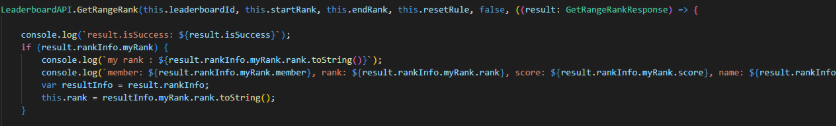
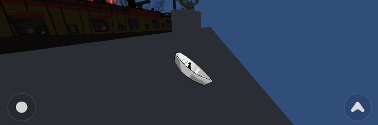
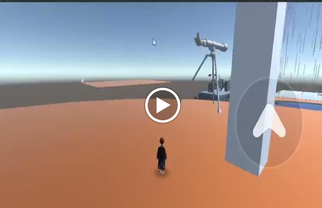
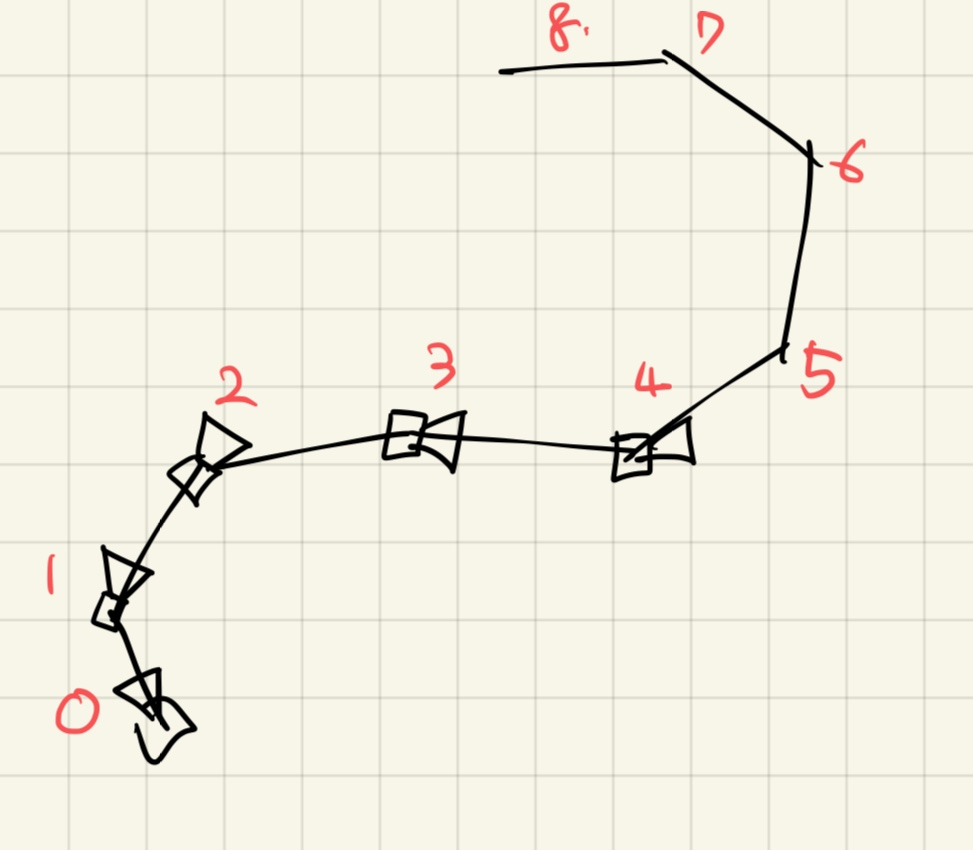
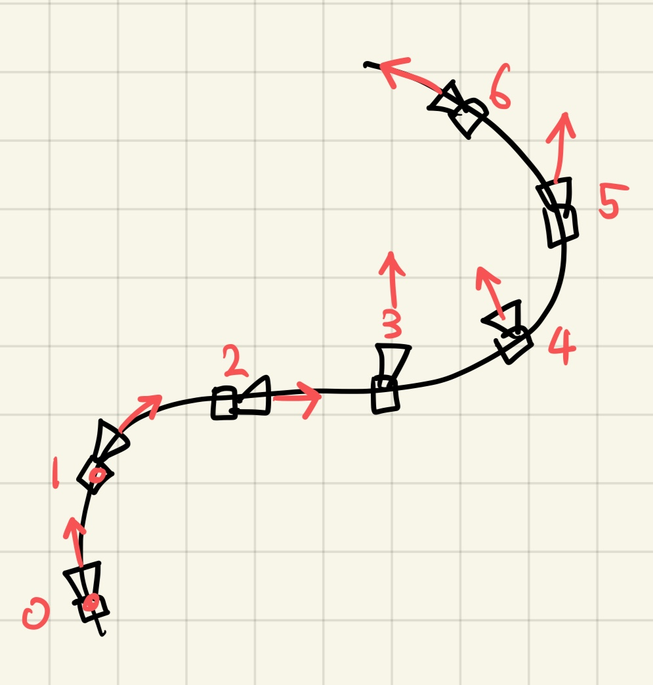
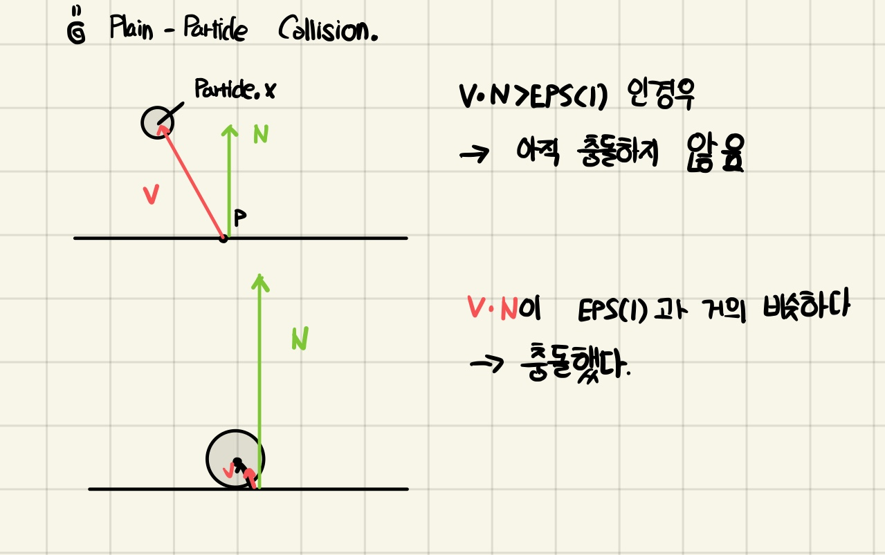
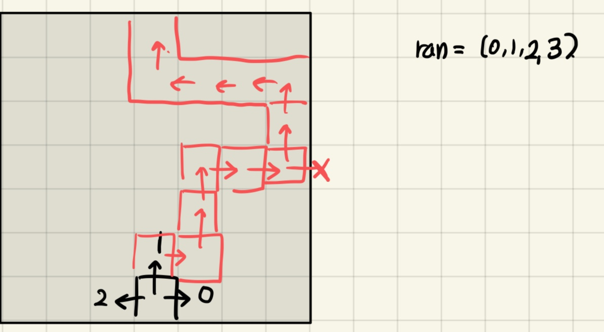

유니티,
그래픽스 프로그래밍을 배웁니다.
유니티,
그래픽스 프로그래밍을 배웁니다.
유니티,
그래픽스 프로그래밍을 배웁니다.
2021.12-2022.06
역할: VR Classroom(VR환경 교육용 소프트웨어)에서 화이트보드 기능 구현
기술스택:
Unity(C#)
• Photon Library를 이용해 멀티플레이어 환경 구현
Unity에서 멀티플레이어 게임을 위해 Photon 환경을 setup 했습니다.
위쪽 사진은 Player1의 시점이고, 아래쪽 사진은 player2가
Player1을 바라본 시점입니다.
• VR controller를 이용해 선 그리기 기능 구현

아래 사진은 Reference Project의 Line Rendering 기능입니다
이 프로젝트를 참고해서 만든 Line Rendering 기능이 위 사진입니다.
line을 정의하기 위해 필요한 최소한의 길이(minimum spacing)제한이 있어서
깔끔하지는 않지만, 컨트롤러를 이용해 사용자가 버튼을 누르면 선을 그릴 수 있도록 만들었습니다.
2022.07-09
역할: 한국관광공사와 협업해서 한국관광,K Food 문화를 홍보하는 월드를 만들었습니다.
기술스택:
Unity(C#), hlsl(쉐이더 작성)
• 랭킹 리더보드 제작
유저들의 게임 내 점수에 따라 랭킹 보드를 만들고 싶다는 의견에 따라 유저들의 이름, 점수, 랭크를 받아와서 게시했습니다.
• 보트 시뮬레이션 제작
월드 중에 물 위에서 보트를 타고 싶다는 의견이 있어서, 폭포에서 보트를 타는 기능을 구현했습니다.
 displacementMultiplier: 보트의 gravity가 얼마나 강하게 움직이는지를 결정합니다.
this.boatHeight(현재 수면의 높이) - this.transform.position(보트의 현재 높이)를 계산합니다.
보트가 수면보다 높이 있는 경우에는, 아래방향으로 보트를 움직입니다.
보트가 수면보다 낮게 있는 경우에는, 물에 잠긴 배가 떠오르듯이 위로 보트를 움직입니다.
수면의 높이를 계산하는 과정입니다.
ray cast를 이용해 보트의 밑바닥에서 중력 방향으로 광선을 발사합니다.
광선이 수면과 부딪히면, 해당 수면의 높이를 새로 저장합니다.
왼쪽: 보트가 수면 위인 경우-> raycasting시 수면의 높이 업데이트
오른쪽: raycasting시 hit이 되는 물체가 없으므로, 가장 최근의 수면의 높이를 사용함.
이 방식은 평면에서는 boatheight가 동일하기 때문에 큰 효과가 없지만,
폭포의 경사면에서는 계속해서 수면의 높이가 변합니다
그래서 Raycasting으로 움직일 때마다 수면의 높이를 새로 계산했습니다.
• 망원경 제작
유저의 시점을 변경해서 맵 전체를 날아가는 새의 시점에서 볼 수 있도록 만들었습니다.
먼저, 카메라가 이동할 경로에 10개의 피벗을 지정합니다.
그리고 카메라를 0번째 피벗부터 다음 피벗까지 움직입니다
이때 카메라의 위치와 회전은 Vector3.Slerp, Quaternion.Slerp로 부드럽게 연결했습니다.
만약 Lerp를 사용하면 직선 경로로 불연속적으로 움직이기 때문에 부자연스럽습니다.


(왼쪽)Linear Interpolation으로 정의한 path
(오른쪽)Slerp(Spherical Linear Interpolation)으로 정의한 path
주기적으로 한국관광공사와 함께하는 기획회의에 참여해서, 구현가능한 아이디어를 정리했습니다.
구현이 어려운 기획안은 대안을 제시해서 본 기획의도를 살리고, 퍼포먼스 부담이 적은 쪽으로 만들었습니다.
그리고 기능별로 구현영상과 설명을 남겨서 매주 보고서를 작성했습니다.
초안이기 때문에 완성도가 높지는 않지만 핵심 기능 구현을 목표로 작업했고 기획자,디자이너,클라이언트와 함께
협업하는 첫 프로젝트였습니다.
한국관광공사 본사, 회사 본사 그리고 제가 일하던 지사가 거리가 있어서
일정이 생기는 경우에는 원격 미팅으로 회의를 대체했습니다.
회의가 끝나면 회의록을 공유하지만 프로젝트 마감이 겹치면서 본사와 지사가 소통이 잘 되지 않기 시작했습니다.
그래서 개발자 인턴끼리 회의가 끝나면 간단히 미팅을 해서 현황을 정리하고
매주 개발 현황 보고서를 작성해 기획자분들이 클라이언트와 소통하는 것을 도왔습니다.
학부 수업에서 배운 내용과, 프로젝트를 정리했습니다.
이 프로젝트에서는 모델을 렌더링하는데 필요한 여러 테크닉과 기술들을 배웁니다.
기술스택 OpenGL

기본 텍스처를 사용해 렌더링한 모델입니다.
간단한 결과지만 vertices,indices, 그리고 texcoords를 읽어서 쉐이더 프로그램을 작성해야합니다.
openGL의 라이브러리 함수를 이용해 모델을 렌더링하는 프로그램을 만들었습니다.
space키를 누르면 모델을 중심으로 카메라가 회전하도록 만들었습니다.
WASD로 줌인,줌 아웃도 가능합니다.
Phong Lighting으로 Diffuse, Specular, Ambient Reflection을 구현했습니다.
그리고 Schlick의 Fresnel을 입혀서, 도끼의 쇠부분이 선명하게 빛나도록 만들었습니다.
이 프로젝트는 그래픽스 프로그래밍을 처음 시도한 프로젝트라, 완벽한 결과를
만들지는 못했습니다.
수강후 시간이 좀 지난 시점에 배운 것들을 정리하면서
프로젝트를 재구성한 것입니다.
간단한 모델 하나를 렌더링 하는데도
프로그램의 구성이 꽤 복잡하고, 결과가 창 하나로 나오기 때문에
이미지 1장으로 프로그램에 생긴 문제를 진단하는 것은 꽤나 어려운 일이었습니다.
완벽하지는 않더라도, 렌더링 프로세스 전반을 익히고 모델을 그리는데 필요한
여러 단계들을 복습하기에 적합한 프로젝트였습니다.
이전에 Creative Media programming 수업에서 SnowGlobe를 만들었습니다.
하지만 해당 globe에 구현된 particle collision system이 완벽하지 않았습니다.
당시 파티클 시스템을 구현할 때 동료분이 제공해주신 PPT가 이 수업의 자료였습니다.
그래서 더욱 멋진 파티클 시스템을 만들기 위해 이 수업을 신청했습니다.
해당 수업의 최종 프로젝트 결과입니다.
공 위에 천 한 장을 떨어트렸을 때 천의 움직임을 구현하는 것이 목표였습니다.
x: particle 변위
v: particle 속도
f: particle에 적용될 힘
fixed: 파티클 고정 여부: true일 경우 해당 파티클은 움직이지 않습니다.
integrate를 통해 해당 파티클의 움직임을 계산할 수 있습니다.
particle은 원통모양의 오브젝트로, 두 점을 기준으로 만들어집니다.
spring에 적용되는 힘을 계산하기 위해서는 damping(진동 후 감쇠되는 힘의 정도),
drag(마찰)을 고려해야합니다.
힘을 계산한 후에는, 양 쪽 파티클에 서로 반대되는 방향으로 힘을 적용합니다.
Particle의 운동 방향과 배열 방향이 중요하게 영향을 미칩니다.
가로로 배열된 파티클의 경우, 인접한 파티클 간의 drag가 상대적으로 약합니다.
그리고 세로 방향으로는 기존의 damping이 적용됩니다.
파티클이 세로로 배치된 경우, 인접한 파티클 간의 drag와 기존 damping이 모두 더해져서, 아래방향으로 잡아당기는 힘이 더욱 강해집니다.
바닥면(plain)의 경우 dot product를 이용해서 간단하게 particle과의 collision을 정의할 수 있습니다.
그리고 Particle 충돌 이후의 파티클 Velocity도 계산했습니다.
sphere collision은 particle과 sphere사이의 거리가 particle radius + sphere radius보다 작은지 판별합니다.
particle이 sphere에 딱 붙거나, 이 범위보다 작아지게 되면, 충돌로 판정합니다.

handling 방식은 동일합니다.
gitRepositoryLinkUnity Project를 수행하면서 고안한 여러가지 아이디어를 담았습니다.
VR환경에서 즐길 수 있는 방탈출 게임을 만들었습니다.
맵 중간에 보이지 않는 path를 만들었는데, 이 path를 만드는 과정을 소개하려고 합니다.
사진처럼, 커다란 Square로 된 빈 공간에 start 지점이 보입니다.
이 출발 지점에서부터, 연속적인 path가 반대쪽 도착지점까지 이어져 있습니다.
이 path는 게임이 시작될 때마다 랜덤하게 자동으로 생성되며, 투명하기 때문에 길을 확인할 수가 없습니다.
플레이어에게는 작은 권총이 주어지는데, 이 권총에서 발사한 투사체를 바닥에 굴려서 길을 체크할 수 있습니다.
먼저 현재 위치(start)를 기준으로 minZ,maxZ를 계산합니다.
이 min maxZ는 path 생성시 정사각형으로 명시된 바운더리를 체크하는데 쓰입니다.
그리고 이 min max XZ를 기준으로 start로 부터 path를 이어 나갑니다.
path가 생성 가능한 방향은 왼쪽,오른쪽,가운데 세 가지 뿐입니다.
path는 정사각형 범위를 벗어나거나, 이전 방문한 path로 돌아가거나, -z 방향으로 생성되지 않습니다.


폴가이즈라는 게임에서 영감을 받아서, 해당 테마로 만든 게임입니다.
해당 게임에서는 플레이어들이 목적지까지 향하는 길을 찾는 스테이지가 있는데
프로젝트에 적용해보면 재밌을 거 같아서 시작했습니다.
실제로 의도한 기능을 구현하기 위한 알고리즘을 이해하고 구현하는 과정, 그리고 디버깅하는 과정이 꽤 시간이 걸렸지만
의도한대로 동작하는 멋진 기능을 구현해서 뿌듯했습니다.
소프트웨어 프로그래밍 역량을 기르기 위해 소프트웨어 학과 수업들을 수강했습니다.
프로그래머로서 빠르게 성장하고 싶은 욕심이 컸고, 한 학기에 전공을 5개~6개정도 수강을 하니
과목 하나하나에 집중하기가 어려웠습니다.
그리고 타과생의 경우 수강신청이 후순위기 때문에 원하는 수업을 권장시기에 듣기가 어려웠습니다.
그래서 일부 과목의 경우 공부하는게 꽤나 어렵고 힘들었던 거 같습니다.
디지털미디어 전공의 과목은 프로젝트 위주다보니 부담이 상대적으로 적었고, 적절한 퀄리티로 완성할 수 있었습니다.
4학년 부터는 수강 전공 수를 줄이고, 디지털미디어 전공의 비주얼 컴퓨팅 수업들을 위주로 수강했습니다.
여러 과목을 배우면서 혼란스러운 점도 있었지만, 프로젝트를 진행할 때마다 저의 색을 입히려고 노력했습니다.
유니티 프로젝트의 경우 창의적인 기능을 구현해서 사용자들에게 즐거움과 재미를 주려고 했습니다.
그래픽스 프로그래밍의 경우 필요한 수학 개념을 학습하고 제 언어로 해석하는데 집중했습니다.
그리고 rendering된 결과와 code를 비교하면서 의도한대로 동작하는지, 각 코드가 어떤 일을 하는지 이해하려고 했습니다.
저는 처음부터 잘 하는 사람은 아니었지만, 필요한 기능을 구현하기 위해 계속해서 배우는 사람입니다.
이 포트폴리오도 github page와 html을 이전에 사용해 본 적이 없지만
github page로 제작한 포트폴리오가 가독성이 뛰어나고 편리해보여서 하루만에 만들었습니다.
저는 성장하기위해서는 계속해서 배움을 이어나갈 거 같습니다.
그리고 그 과정에서 여러 똑똑한 사람들과 협업할 수 있는 기회를 찾고 있습니다.
지금까지 제 포트폴리오를 읽어주셔서 감사합니다